Hard drive occupation prediction with R - part 3
On the second article, we saw how to use a Monte Carlo simulation generate sample of disk space delta for future dates and calculate the distribution probability of zeroing free space in the future.
In this article, we will see how we can plot the evolution of predicted distribution for the occupied disk space. Instead of answering que question "how likely is that my disk space will zero before date X?," we will answer "how much disk space will I need by date X, and with what probability?"
The input data
This file has the dataset we will use as example. It's the same we used in the second part. The graph below shows it:
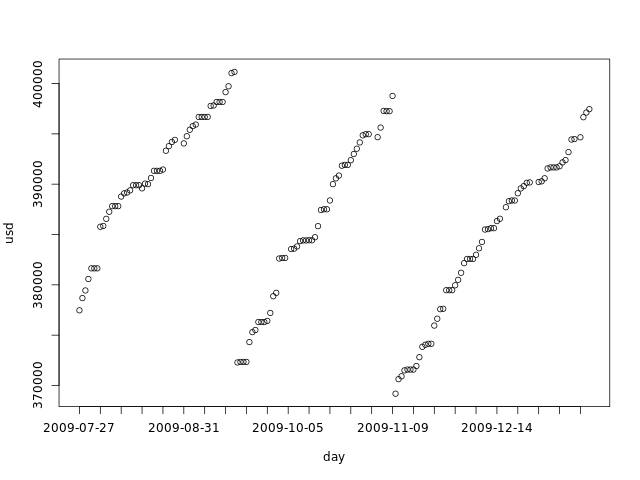
We now import this data into R:
duinfo <- read.table('duinfospike.dat',
colClasses=c("Date","numeric"),
col.names=c("day","usd"))
attach(duinfo)
totalspace <- 450000
today <- tail(day, 1)
We then build our simulations for the next 4 months:
# Number of Monte Carlo samples
numsimulations <- 10000
# Number of days to simulate
numdays <- 240
# Simulate:
simulate <- function(data, ndays) {
delta <- diff(data)
dssimtmp0 <- replicate(numsimulations, tail(data, 1))
dssimtmp <- dssimtmp0
f <- function(i) dssimtmp <<- dssimtmp + replicate(numsimulations, sample(delta, 1, replace=TRUE))
cbind(dssimtmp0, mapply(f, seq(1, ndays)))
}
dssim <- simulate(usd, numdays)
# Future days:
fday <- seq(today, today+numdays, by='day')
Visualizing the possible scenarios
What king of data have we built in our simulations? Each simulation is built by sampling from the delta samples and adding to the current disk space for each day in the simulated period. We can say that each individual simulation is a possible scenario for the next 4 months. The graph bellow shows the first 5 simulations:
plot(fday, dssim[1,], ylim=c(min(dssim[1:5,]), max(dssim[1:5,])), ylab='usd', xlab='day', xaxt='n', type='l') axis.Date(1, day, at=seq(min(fday), max(fday), 'week'), format='%F') lines(fday, dssim[2,]) lines(fday, dssim[3,]) lines(fday, dssim[4,]) lines(fday, dssim[5,]) abline(h=totalspace, col='gray')
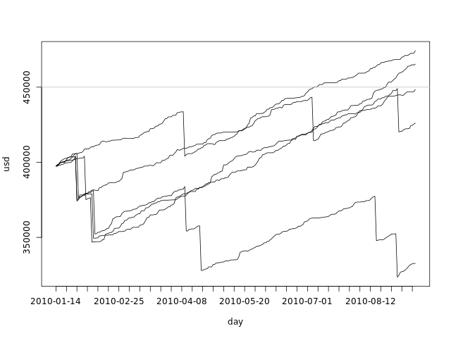
From this graph we can clearly see that the range of possible values for the used disk space grows with time. All simulations start with the same value - the used disk space for today - and grow apart as we sample from the delta pool.
We can also plot all simulations in a single graph:
plot(fday, dssim[1,], ylim=c(min(dssim), max(dssim)), ylab='usd', xlab='', xaxt='n', type='l') axis.Date(1, day, at=seq(min(fday), max(fday), 'week'), format='%F') f <- function(i) lines(fday, dssim[i,]) mapply(f, seq(2, numdays)) abline(h=totalspace, col='gray')
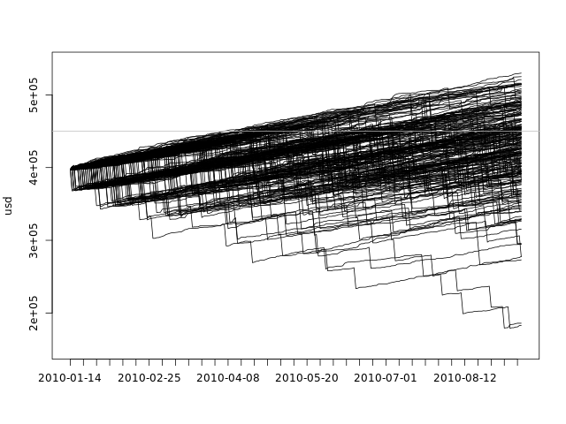
This plot gives us an idea of the overall spread of the data, but it fails to show the density. There are 10000 black lines there, with many of them overlapping one another.
Visualizing the distribution for specific days
There is another way to look at our data: we have created, for each day, a sample of the possible used disk spaces. We can take any day of the simulation and look at the density:
dssimchosen <- list(density(dssim[,5]), density(dssim[,15]), density(dssim[,45]), density(dssim[,120]))
colors <- rainbow(length(dssimchosen))
xs <- c(mapply(function(d) d$x, dssimchosen))
ys <- c(mapply(function(d) d$y, dssimchosen))
plot(dssimchosen[[1]], xlab='usd', ylab='dens',
xlim=c(min(xs),max(xs)), ylim=c(min(ys),max(ys)), col=colors[1], main='')
lines(dssimchosen[[2]], col=colors[2])
lines(dssimchosen[[3]], col=colors[3])
lines(dssimchosen[[4]], col=colors[4])
abline(v=totalspace, col='gray')
legend('top', c('5 day', '15 days', '45 days', '120 days'), fill=colors)
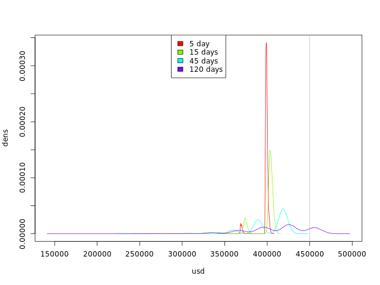
By looking at this graph we can see the trend:
- The curves are getting flatter: we are getting more possible values for occupied disk space.
- The curves are moving to the right: we have more simulations with higher occupied disk space values.
Visualizing the evolution of the distribution
So far, we have seen how we can visualize some simulations along the 4 months and how we can visualize the distribution for some specific days.
We can also plot the distribution of the values for each day in the simulated 4 months. We can't use the kernel density plot or the histogram, as they use both axes, but there are other options, most of them involving some abuse of the built-in plot functions.
Boxplot
We can use the boxplot function to create a boxplot for each day in R in a very straightforward way:
boxplot(dssim, outline=F, names=seq(today, as.Date(today+numdays), by='day'), ylab='usd', xlab='day', xaxt='n') abline(h=totalspace, col='gray')
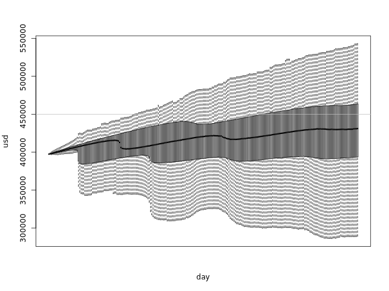
The boxplots glued together form a shape that shows us the distribution of our simulations at any day:
- The thick line in the middle of the graph is the median
- The darker area goes from the first quartile to the third - which means that 50% of the samples are in that range
- The lighter area has the maximum and minimum points, if they are within 1.5 IQR of the upper/lower quartile. Points out of this range are considered outliers and are not plotted.
Quantile lines
We can use the quantile function to calculate the values of each quantile per day, and plot the lines:
q <- 6 f <- function(i) quantile(dssim[,i], seq(0, 1, 1.0/q)) qvals <- mapply(f, seq(1, numdays+1)) colors <- colorsDouble(rainbow, q+1) plot(fday, qvals[1,], ylab='usd', xlab='day', xaxt='n', type='l', col=colors[1], ylim=c(min(qvals), max(qvals))) mapply(function(i) lines(fday, qvals[i,], col=colors[i]), seq(2, q+1)) axis.Date(1, day, at=seq(min(fday), max(fday), 'week'), format='%F') abline(h=totalspace, col='gray')
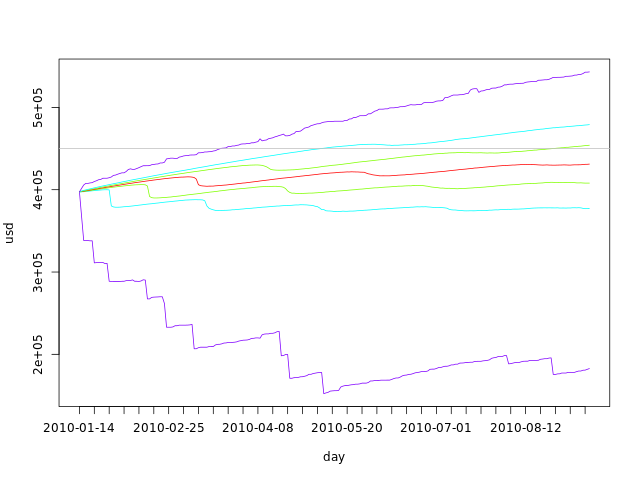
The advantage of this type of graph over the boxplot is that it is parameterized by q. This variable tells us the number of parts that we should divide our sample in. The lines above show us the division. If q is odd, the middle line is exactly the median. If q is 4, the lines will draw a shape similar to that of the boxplot, the only difference being the top and bottom line, that will include outliers - the boxplot filters outliers by using the IQR as explained above.
In the code above, we have used the colorsDouble function to generate a sequence of colors that folds in the middle:
colorsDouble <- function(colorfunc, numcolors) {
colors0 <- rev(colorfunc((1+numcolors)/2))
c(colors0, rev(if (numcolors %% 2 == 0) colors0 else head(colors0, -1)))
}
Quantile areas
We can also abuse the barplots function to create an area graph. We have to eliminate the bar borders, zero the distance between them and plot a white bar from the axis to the first quartile, if appropriate:
q <- 7
f <- function(i) {
qa <- quantile(dssim[,i], seq(0, 1, 1.0/q))
c(qa[1], diff(qa))
}
qvals <- mapply(f, seq(1, numdays+1))
colors <- c('white', colorsDouble(rainbow, q))
barplot(qvals, ylab='usd', xlab='day', col=colors, border=NA, space=0,
names.arg=seq(min(fday), max(fday), 'day'), ylim=c(min(dssim), max(dssim)))
abline(h=totalspace, col='gray')
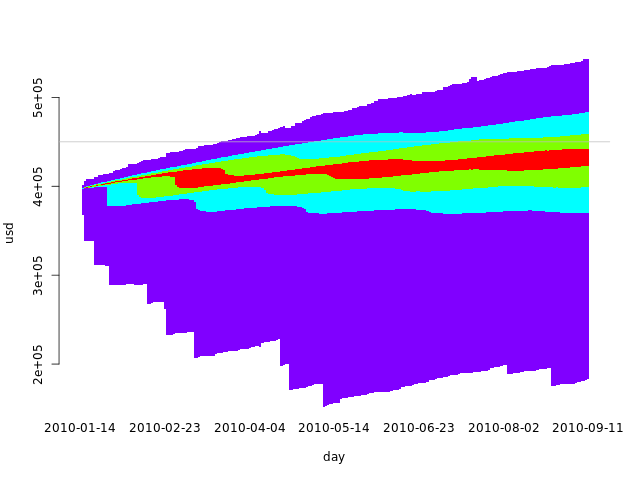
In this case, using an odd q makes more sense, as we want to use the same colors for the symmetric intervals. With an even q, there would either be a larger middle interval with two quantiles or a broken symmetry. The code above builds a larger middle interval when given an even q.
Quantile heat map
If we increase q and use heat.colors in a quantile area plot, we get something similar to a heat map:
q <- 25
f <- function(i) {
qa <- quantile(dssim[,i], seq(0, 1, 1.0/q))
c(qa[1], mapply(function(j) qa[j] - qa[j-1], seq(2, q+1)))
}
qvals <- mapply(f, seq(1, numdays+1))
colors <- c('white', colorsDouble(heat.colors, q))
barplot(qvals, ylab='usd', xlab='day', col=colors, border=NA, space=0,
names.arg=seq(min(fday), max(fday), 'day'), ylim=c(min(dssim), max(dssim)))
abline(h=totalspace, col='gray')
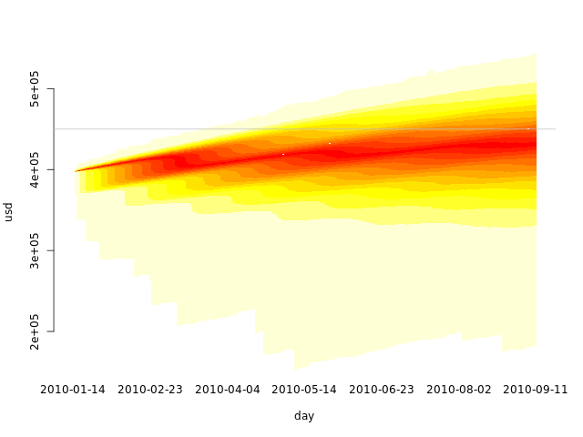
Visualizing past, present and future
We can also plot our data in the same graph as our simulations, by extending the axis of the barplot and using the points function:
quantheatplot <- function(x, sim, ylim) {
q <- 25
simstart <- length(x) - length(sim[1,])
f <- function(i) {
if (i < simstart)
replicate(q+1, 0)
else {
qa <- quantile(sim[,i-simstart], seq(0, 1, 1.0/q))
c(qa[1], diff(qa))
}
}
qvals <- mapply(f, seq(1, length(x)))
colors <- c('white', colorsDouble(heat.colors, q))
barplot(qvals, ylab='usd', xlab='day', col=colors, border=NA, space=0,
names.arg=x, ylim=ylim)
abline(h=totalspace, col='gray')
}
quantheatplot(c(day, seq(min(fday), max(fday), 'day')), dssim, ylim=c(min(c(usd, dssim)), max(dssim))) points(usd) abline(h=totalspace, col='gray')
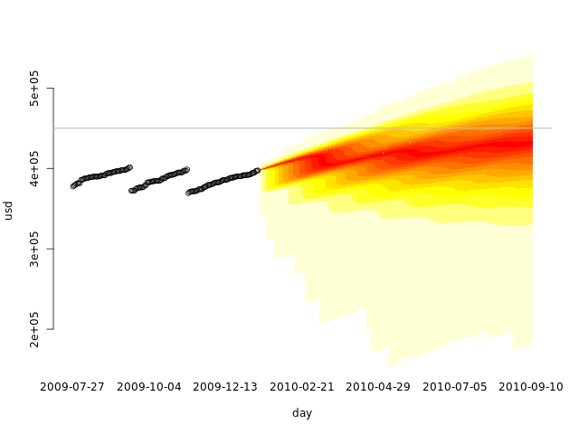
Training set, validation set
Cross-validation is a technique that we can use to validate the use of Monte Carlo on our data.
We first split our data in two sets: the training set and the validation set. We than use only the first in our simulations, and plot the second over. We can then see graphically if the data fits our simulation.
Let's use the first two months as the training set, and the other three months as the validation set:
# Number of days to use in the training set numdaysTrain <- 60 numdaysVal <- length(day) - numdaysTrain dssim2 <- simulate(usd[seq(1, numdaysTrain)], numdaysVal-1)
allvals <- c(usd, dssim2) quantheatplot(day, dssim2, c(min(allvals), max(allvals))) points(usd)
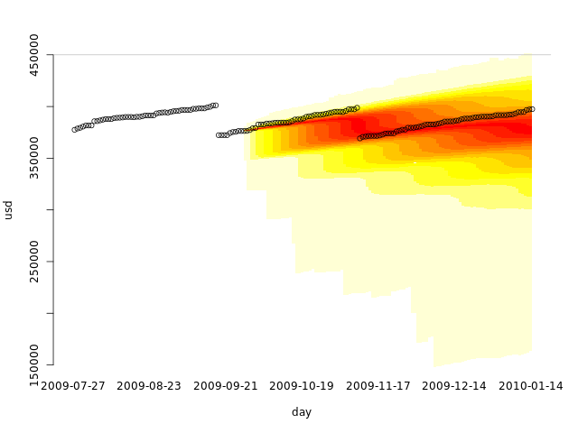
Looks like using only the first two months already gives us a fair simulation. What if we used only a single month, when no disk cleanup was performed?
# Number of days to use in the training set numdaysTrain <- 30 numdaysVal <- length(day) - numdaysTrain dssim3 <- simulate(usd[seq(1, numdaysTrain)], numdaysVal-1)
allvals <- c(usd, dssim3) quantheatplot(day, dssim3, c(min(allvals), max(allvals))) points(usd)
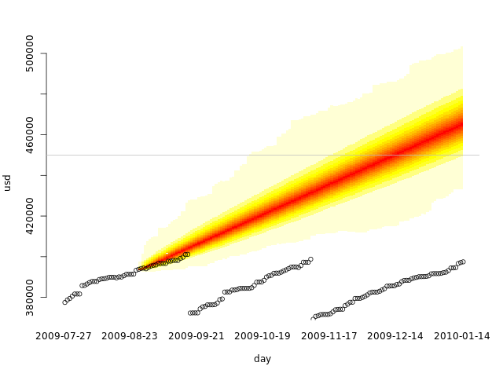
If we do regular disk cleanups, we must have at least one of them in our training set to get realistic results. Our training set is not representative without it.
This also tests our cross-validation code. A common mistake is using the whole data set as the training set and as the validation set. That is not cross-validation.
Conclusions
We can use Monte Carlo simulations not only to generate a distribution probability of an event as we did in the previous article, but also to predict a possible range of future values. In this article, disk space occupation is not the most interesting example, as we are usually more interested in knowing when our used disk space will reach a certain value than in knowing the most probable values in time. But imagine that the data represents the number of miles traveled in a road trip or race. You can then not only see when you will arrive at your destination, but also the region where you will probably be at any day.
There are plenty of other uses for this kind of prediction. Collect the data, look at it and think if it would be useful to predict future ranges, and if it makes sense with the data you have. Predictions based on the evidence can be even used to support a decision or a point of view, just keep mind that you can only use the past if you honestly don't think anything different is going to happen.